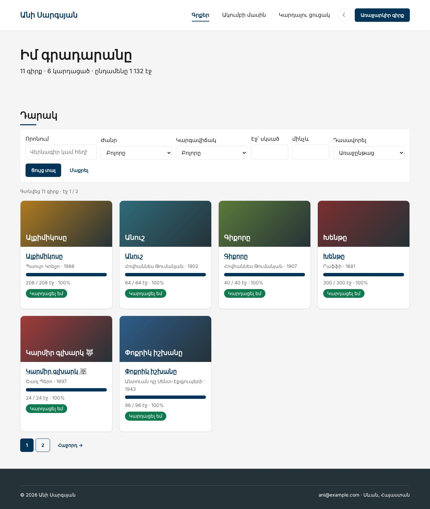
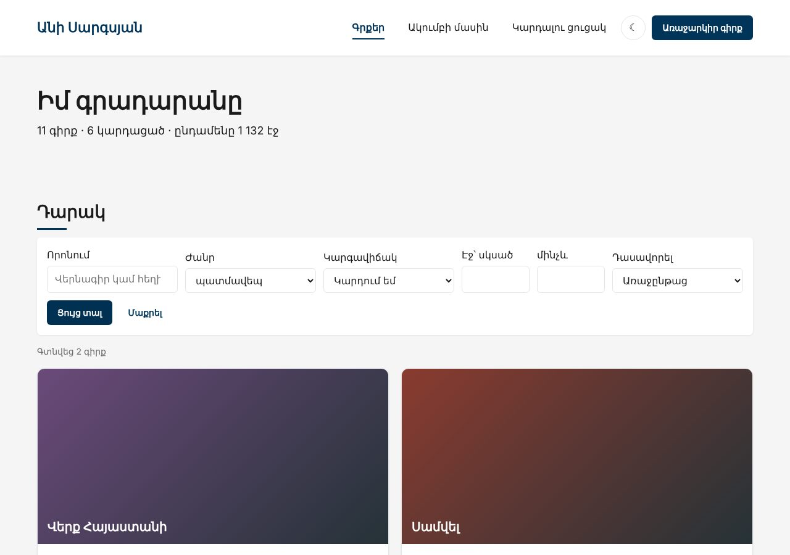
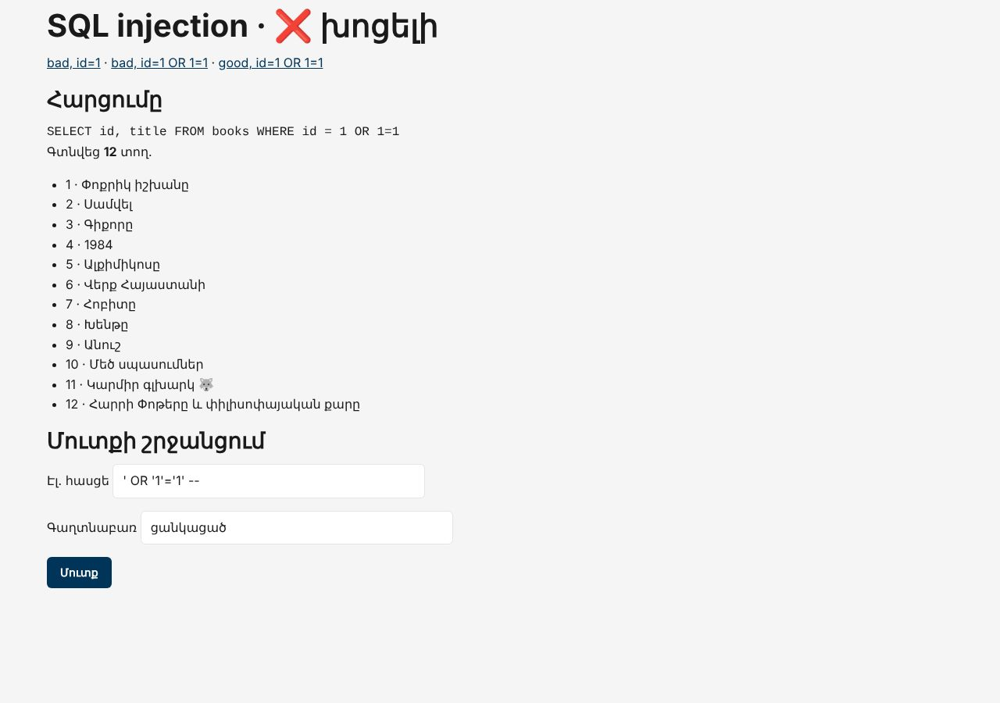
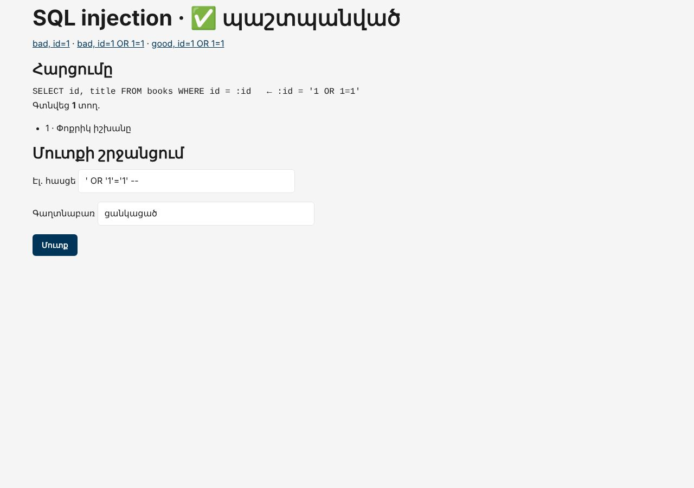

Տնային աշխատանք · PHP Դաս 10 · մինի-նախագիծ
data.php-ը ջնջվում է։ Կայքը կարդում է բազան PDO-ով, իսկ դարակը ստանում է ֆիլտրեր՝ որոնում, ժանր, կարգավիճակ, էջերի միջակայք, դասավորում և էջավորում։ Ամեն օգտագործողի արժեք՝ միայն prepared statement-ով։ Փորձնական ֆայլում տեսնում ես, թե ինչ կլիներ առանց դրա։
Դաս 01–10․ PDO, prepare, execute, bindValue(…, PDO::PARAM_INT), fetch, fetchAll, fetchColumn, ERRMODE_EXCEPTION, EMULATE_PREPARES, դինամիկ WHERE, IN (?, ?)՝ array_fill-ով, config.php, urlencode։ INSERT/UPDATE ադմինից՝ Դաս 11։




== ORDER BY :field
Սխալ չկա, բայց կարգը id-ի կարգն է, ոչ այբբենական․ Փոքրիկ իշխանը, Սամվել, Գիքորը
== LIMIT execute([...])-ով (emulated prepares)
PDOException: SQLSTATE[42000]: Syntax error or access violation: 1064 You have an error in your SQL syntax; check the manual that corresponds to your MariaDB server version for the right syntax to use near ''3'' at line 1
== LIMIT bindValue(..., PDO::PARAM_INT)-ով (emulated prepares)
3 տող ✓
== ERRMODE_SILENT
query() վերադարձրեց false․ ոչ մի սխալ էկրանին, կոդը շարունակում է «դատարկ» տվյալներով
== AVG(pages) → formatPages(int)
AVG = '260.5000'
TypeError: formatPages(): Argument #1 ($pages) must be of type int, string given, called in /ani-club/lab-traps.php on line 69
== Ուղղված․ (int)
260 էջ ✓Շարունակիր քո նախագիծը։ Եթե բաց ես թողել նախորդ դասը, սկսիր Դաս 09-ի օրինակից։
starter/css/php-10.css — ֆիլտրերի վահանակ և էջավորումstarter/sql/lab-10.sql — փորձնական աղյուսակ մուտքի շրջանցման համար (տնային 3)| Գործարկել |
|---|
php -S localhost:8000 |
config.example.php → config.php (.gitignore-ում)db.php՝ static $pdo, ERRMODE_EXCEPTION, FETCH_ASSOC, EMULATE_PREPARES => falseerror_log, օգտագործողին՝ ընդհանուր տեքստgetBooks(), countBooks(), getBook(), getBooksByIds(), getGenres(), getStats()normalizeBook()՝ (int) և read_pages → read, որ Դաս 05–07-ի շաբլոնները չփոխվենLIKE :q OR author LIKE :q2, %-ը արժեքում (տնային 8):min, :max (տնային 9)STATUS_SQL, SORT_MAP)function buildWhere(array $f): array
{
$where = ['b.is_active = 1'];
$params = [];
if ($f['q'] !== '') {
// % -ը՝ ԱՐԺԵՔՈՒՄ, ոչ SQL-ում։ Նույն պարամետրը երկու անգամ չի կարելի՝ :q և :q2
$where[] = '(b.title LIKE :q OR b.author LIKE :q2)';
$params['q'] = '%' . $f['q'] . '%';
$params['q2'] = '%' . $f['q'] . '%';
}
if ($f['genre'] !== '') {
$where[] = 'g.slug = :genre';
$params['genre'] = $f['genre'];
}
if ($f['status'] !== '') {LIMIT :limit OFFSET :offset՝ PARAM_INT-ով?page=abc → 1, ?page=99 → վերջինըpageUrl()՝ նույն ֆիլտրերը + այլ էջlab-injection.php՝ ?id=1 OR 1=1 և ' OR '1'='1' -- մուտք (տնային 2, 3)lab-traps.php՝ ORDER BY :field, LIMIT, ERRMODE_SILENT, AVG()-ի տիպը (տնային 4–7)sql/lab-10.sql-ը$_GET կամ $_POST․ միայն :անուն?sort=title;DROP TABLE books-ը անտեսվում էbook.php?id=1%20OR%201=1 → 404is_active = 0) չի երևում և չի բացվումconfig.php-ը .gitignore-ում է| Սխալ | Ինչպես ուղղել |
|---|---|
SQLSTATE[42000] … near ''6'' | LIMIT-ը՝ bindValue(…, PDO::PARAM_INT), ոչ execute([...]) |
Invalid parameter number | Նույն :q-ն երկու անգամ․ native prepares-ով պետք է :q և :q2 |
TypeError … string given formatPages-ում | SUM()/AVG()-ը գալիս են տող․ (int) |
Դասավորումը չի աշխատում :sort-ով | Սյունակի անունը չի պարամետրացվում․ սպիտակ ցուցակ |
Սրանք Դաս 10-ի տնային աշխատանքի կետերն են։ «մինի-նախագծում» նշվածները արդեն կատարել ես վերևի քայլերում՝ Անիի ակումբում։ Մնացածը կատարիր ՏեխնոՄարկետում, ինչպես գրված է դասում։
?id=1 OR 1=1։ Ուղարկիր սքրինշոթ։ Ապա ուղղիր prepared statement-ով։ մինի-նախագծում' OR '1'='1'---ով նույն փորձնական ֆայլում։ մինի-նախագծումORDER BY :field։ Ի՞նչ եղավ և ինչու։ մինի-նախագծումLIMIT-ի խնդիրը execute([...])-ով և bindValue-ով։ մինի-նախագծումERRMODE_EXCEPTION-ը և կատարիր սխալ հարցում։ Ի՞նչ ես տեսնում։ Ինչո՞ւ դա վտանգավոր է։ մինի-նախագծումDECIMAL-ի տիպի թակարդը strict_types-ով։ մինի-նախագծումLIKE :q։ Ուշադրություն՝ %-ը որտե՞ղ պիտի լինի։ մինի-նախագծումWHERE-ի օրինաչափությամբ։ մինի-նախագծումproducts.php-ը անվտանգության տեսանկյունից։ Ի՞նչ գտավ։Երբ բաժին 03-ի բոլոր կետերը նշված են, բացիր օրինակը։ Օրինակում lab-… ֆայլերը փորձնական են․ դրանք հաջորդ դասի օրինակում այլևս չկան։ Գործարկելուց առաջ ստեղծիր բազան example/sql/-ի ֆայլերով և config.php-ը։ Գտիր մեկ բան, որ դու արել ես այլ կերպ, և մտածիր՝ որն է ավելի հասկանալի և ինչու։ Քո լուծումը կարող է տարբերվել և լինել ճիշտ։